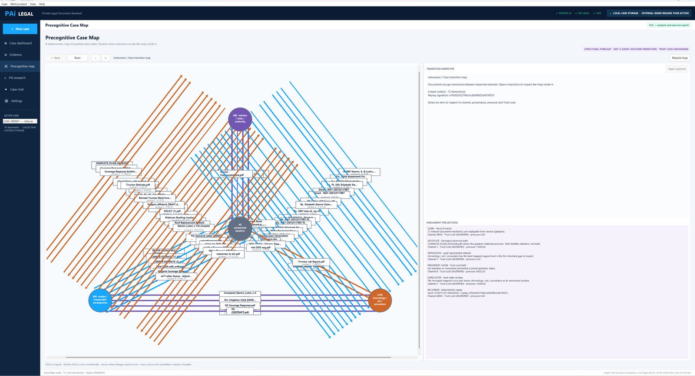

Deterministic case analysis that names what your claim has not proved
Not a vote between model personas. A closure rule applied to three channels of a legal case, with the gap it exposes as the finding. Nothing here calls a model — the findings are identical whether or not a private AI is installed.
Three channels
Strip a civil case down and every element of every theory sits on one of three things:
| Channel | What lives there |
|---|---|
| Matter | Amounts, measurements, injury, physical extent — what it cost. |
| Relation | Parties, duties, courts, authorities, obligations — who owed what to whom. |
| Chronology | Acts, dates, sequence, procedural position — when it happened. |
These compose under a fixed algebraic rule rather than a heuristic. Two like channels cancel to the baseline; two different channels leave the third as their residue. Relation and chronology together point at matter. Matter and relation point at chronology. The composition is closed and verifiable, and the software checks that closure holds before it relies on it.
The gap is the finding
Two supported channels name the third. If the third is not in your record, that absence is the answer the software gives you.
A legal theory is the host the channels sit inside. Breach of contract needs a contract that bound the parties (relation), performance that failed on a date (chronology), and a measurable loss (matter). Support two of those from the documents and the algebra names the one you are missing — before a judge does.
Each theory carries its own text for what is missing, written to be useful rather than clinical. The bad-faith theory is the sharpest example, and the one that saves people from filing something that dies on a motion:
Bad faith, and the amount that does not count
Bad faith needs harm the carrier's conduct caused on top of what the policy already owed. So amounts are typed by the line they appear on: attorney's fees, interest, punitive damages, consequential loss and emotional distress read as harm beyond the benefit; estimates, repair costs, ACV, RCV, policy limits and deductibles read as the benefit itself.
Anything ambiguous is typed as the policy benefit — the conservative reading, which can never manufacture support for a bad-faith claim. If every amount in your record is the benefit, the software tells you plainly: paying the estimate late is a breach, not bad faith.
A keyword is not support
Matching a word is easy and worthless on its own, because the sentence containing it may be denying the very thing you need. Support is read clause by clause: the software finds the clause the match sits in, and a denial anywhere in it — no, never, without, dismissed, insufficient, fails to establish, or a "denies that" running into the match — means the element stays open for human review. "Not only" is treated as the intensifier it is, not a negation. Uncertainty leaves the element unsupported rather than letting a pattern close it.
Saying it yourself is not proof
An element supported only by your own pleading is marked as asserted rather than supported, and the plain-language view says so directly: you say this in your own court filing, but saying it in your filing is not proof of it — a judge will want a document from outside your own paperwork. It then tells you which channel of proof to go find.
The map and its six projections

Documents occupy transitions between those channels, and the case map is built from them. Six projections read that map, each with one job:
| Projection | What it reports |
|---|---|
| Clerk | How many indexed document transitions are replayable from their stored signatures. A statement about the record, not about the case. |
| Advocate | Which document carries the greatest relational pressure — and says in the same breath that this identifies attention, not truth. |
| Opposition | The least represented channel: the thinnest part of the case and the first structural gap to inspect. |
| Precedent Judge | Confirms no transition or recurrence promoted a stored epistemic status. This one exists to say no. |
| Forecaster | What the strongest mapped cross-pair leaves as its unresolved residue — the next thing that has to be answered. |
| Recorder | The seed and replay signature, so the whole finding can be reproduced exactly. |
The map is a structural forecast of possible next states in the record. It is not a prediction of what a court will do.
More than one lawsuit in one folder
Trouble rarely arrives as a single suit. A claim gets denied, then the lawyer hired to fight the denial mishandles it: two matters, different defendants, different theories, one underlying event. Filed together they look like one dispute, and everything downstream inherits the confusion — retrieval pulling bad-faith authorities for a malpractice question, a draft that merges two suits.
So matters are detected from captions, docket numbers and claim numbers and kept distinct — but deliberately not severed into separate folders, because the malpractice matter exists because of the insurance claim and its proof lives in the insurance documents. The links between matters are recorded with the reason for each link. A document with no caption, docket or claim number is left unassigned rather than guessed at.
Each matter is also marked filed or still building, because whether a court has taken a case in is the single most consequential thing to be wrong about — and the software says plainly that "not filed" does not mean no clock is running.
Where the model is allowed to speak
Last, and on a leash. Its instructions forbid inventing a citation, quotation, date, holding, party, docket number or fact, and require every factual statement to name its supplied source marker. Its output is then re-bracketed by the software before you see it: any claim it tried to mark independently validated is checked against the actual validated inputs and demoted to speculative unless it aligns exactly with one. Prose it produces on its own authority is marked speculative on its face.
The model cannot award itself credibility. It phrases the finding; the record makes it.